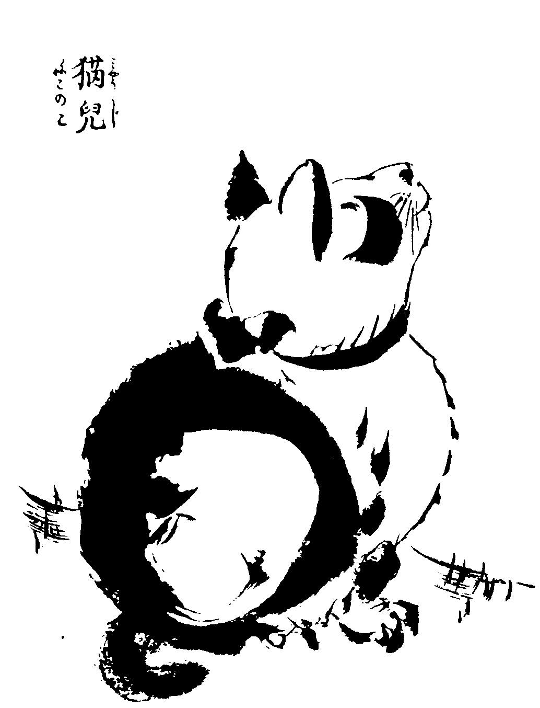
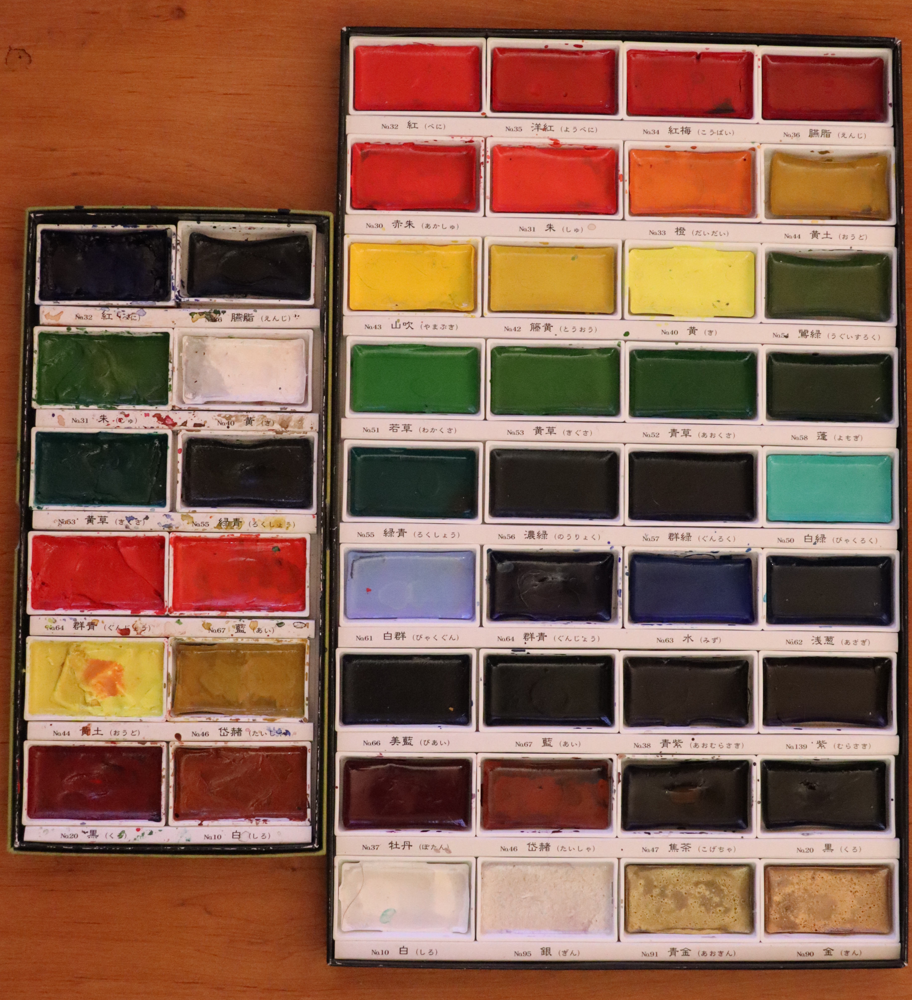

Manet and Ukiyo-e
The Ukiyo-e artistic movement arrived in France in 1856 during the Impressionist period with the publication of Hokusai manga (sketches) and Hiroshige prints. In this article we analyze the influences of the Ukiyo-e artistic movement on Edouard Manet's paintings.

...
Fountain pen, watercolor and Lamy 2000
Brief history of fountain pens and why they are relevant in watercolor
Transportable, durable and allowing the addition of contrast and personality to a drawing, the fountain pen is a tool of choice for the watercolourist. In this article, I quickly introduce how to choose a fountain pen for watercolor painting and sketching.

...
How to make a versatile watercolor palette ?
When a jedi gains enough experience, he makes his lightsaber himself. It is the same for the watercolorist, who when he has acquired enough experience, designs a palette adapted to his needs.

...
Presentation of Morikuni, heir of Kano school.
Presentation of Morikuni, a worshipper of nature.
To begin, a little japanese story :
One says that a painter entered in an inn for the night, after diner just before going to bed, he painted a cat. During the night a great noise is heard. At dawn, when the painter left, the innkeeper entered the room : the cat painted the day before had disappeared and two mices were lying dead on.

...
Review : Hahnemühle watercolor book
In November 2019, seduced by its design and its price, I bought the Hahnemühle watercolor book A5.
Today, I've finished it, let's do a little review of this watercolor notebook !

...
Review : Gansai Tambi Watercolor
The watercolor Gansai Tambi manufactured by the Japanese compagny Kuretake is now exported to european art supplies stores. Are there any differences between Japanese and Western watercolor? Coincidentally, I have 2 palettes of Gansai Tambi. Let's review it!

...
Hiroshige, prints and Aix-en-provence
In need of inspiration? Do not panic, I suggest a little trip to the edo air to meet the great masters of Japanese printmaking.

...
Which black ink for watercolor painting ?
What makes an ink waterproof ?
Black ink is widely used in watercolor to bring contrast to painting, as in the line and wash technique. Today ink can be found in liquid form in bottles. But historically ink was kept solid in the form of stick. To cut a long story short, an ink is a solvent in which pigments floats. Once the ink is deposited on the sheet, the solvent evaporates leaving only the pigments. The pysical force in charge of maintaining the pigments on the sheet is called "the van der Waals force". This force can be more or less strong and wetting the paper can break this force and thus move the pigments. The ink is therefore not waterproof.
...
Review : Portable painter palette

Watercolorists are always struggling to find the perfect traveling palette. The tradeoff must be made according to :
Well the portable painter is a serious candidat.
...